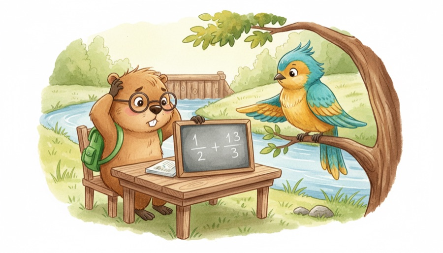
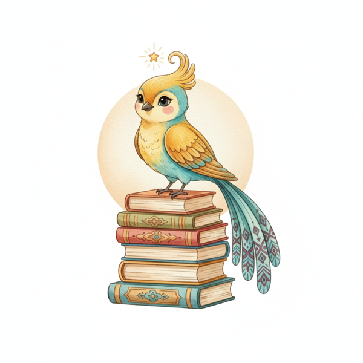
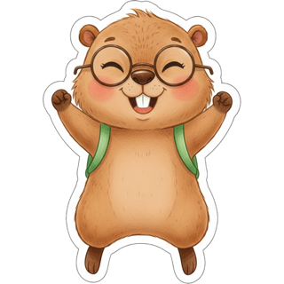
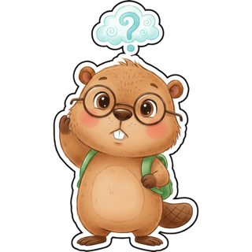
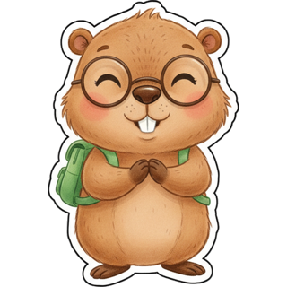
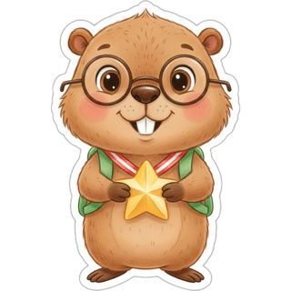
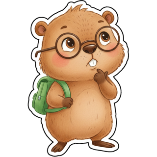
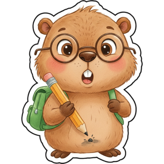
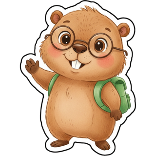
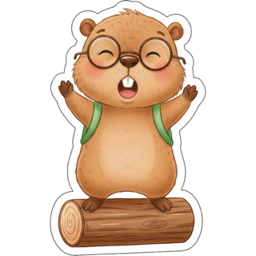

Bobr AI — bu bot, unda bola oʻqituvchi boʻladi. Bobr faqat sen tushuntirgan narsani biladi. Toʻgʻri tushuntirsang — toʻgʻri yechadi.
Bobr AI — бот, где ребёнок становится учителем. Бобр знает только то, что ты ему объяснил. Объяснишь верно — решит верно.
🦫 Bobrga yozish🦫 Написать Бобру
«Kasrlar menga nima uchun kerak?» — 5-sinf oʻquvchisining eng koʻp beradigan savoli.
«Зачем мне эти дроби?» — самый частый вопрос пятиклассника.
Qoidani yodlash mumkin. Lekin uni boshqaga tushuntira olmasang — demak, hali tushunmagansan. Biz shu yerdan boshladik.
Правило можно выучить. Но если не можешь объяснить его другому — значит, ещё не понял. С этого мы и начали.
Tushuntirayotgan odam mavzuni chuqurroq tushunadi: soʻz topish uchun oʻylashga majbur boʻladi. Shuning uchun bizda bola savolga javob bermaydi — u Bobrga dars beradi.
Кто объясняет, тот понимает глубже: чтобы найти слова, приходится думать. Поэтому у нас ребёнок не отвечает на вопросы — он даёт урок Бобру.
Bobrga masalani qanday yechishni tushuntiradi.
Объясняет Бобру, как решать задачу.
Aynan eshitganini qiladi. Notoʻgʻri tushuntirilsa — samimiy xato qiladi.
Делает ровно то, что услышал. Объяснили неверно — искренне ошибается.
Qiyin boʻlsa, savol bilan yordam beradi. Tayyor javobni aytmaydi.
Если трудно — помогает вопросом. Готовый ответ не называет.
Xato qiladigan — shogird, bola emas. Shuning uchun uyalmaydi.Ошибается ученик, а не ребёнок — поэтому не стыдно.
Chirchiq boʻyida yashaydi, toʻgʻon quradi va kechqurun yogʻochlarini sanaydi. Doʻstlari bilan yogʻochlarni teng boʻlmoqchi edi — «yarim va uchdan bir»ni qoʻshdi, toʻgʻon qiyshiq chiqdi. Endi unga ustoz kerak.
Живёт у Чирчика, строит плотины и по вечерам пересчитывает брёвна. Хотел поделить их с друзьями поровну — сложил «половину и треть», плотина вышла кривой. Теперь ему нужен устоз.

Baxt qushi. Dono, xotirjam, saxiy. Hech qachon shoshirmaydi, har bir xatoni yoʻlning bir qismi deb biladi va yutuqni doim bolaga beradi: «Buni sen oʻzing topding».
Птица счастья. Мудрая, спокойная, великодушная. Никогда не торопит, любую ошибку считает частью пути и заслугу всегда отдаёт ребёнку: «Ты нашёл это сам».
Bola mavzuni tanlaydi — masalan, kasrlar.
Ребёнок выбирает тему — например, дроби.
Bobr masala beradi va «qanday yechaman?» deb soʻraydi.
Бобр даёт задачу и спрашивает: «Как решать?»
Bola tushuntiradi — Bobr aynan shunday yechadi.
Ребёнок объясняет — Бобр решает ровно так.
Xato boʻlsa — bola uni oʻzi koʻradi, Humo savol bilan yordam beradi.
Есть ошибка — ребёнок видит её сам, Хумо помогает вопросом.
Namuna suhbat · ism toʻqima, javoblar maʼnosi boʻyicha
Пример диалога · имя вымышленное · ответы бота по смыслу, не дословно
Savol: qayerda adashding?
Вопрос: где свернула мысль?
Yoʻnalish: qaysi qoidani eslaymiz?
Направление: какое правило вспомнить?
Boshqa sonlar bilan oʻxshash misol.
Похожий пример с другими числами.
Qadam-baqadam — lekin javobsiz.
По шагам — но без ответа.
Har bir mavzuda bolalar koʻp qiladigan xatolar va ularning sababi.
В каждой теме — ошибки, которые дети делают чаще всего, и их причины.
Bozor, osh, chegirma, futbol — har mavzu hayotdan misol bilan.
Базар, плов, скидка, футбол — каждая тема с примером из жизни.
Bobr bola yozgan tilda javob beradi.
Бобр отвечает на том языке, на котором написал ребёнок.
Har bir oʻzlashtirilgan mavzu — Bobr toʻgʻoniga bitta yogʻoch. Bola oʻz yutugʻini koʻrib turadi.
Каждая освоенная тема — бревно в плотине Бобра. Ребёнок видит свой прогресс.
Koʻrinish namunasi
Пример того, как это будет выглядеть
Bola qaysi mavzularni Bobrga tushuntira oldi va qayerda qiynaldi — qisqa xabar.
Какие темы ребёнок смог объяснить Бобру и где было трудно — коротким сообщением.
Sinfda qaysi xatolar koʻp uchrayapti — darsni shunga qarab rejalash.
Какие ошибки чаще всего в классе — чтобы планировать урок.
Bolaning faqat ismi saqlanadi — familiya va maktab yozilmaydi.
О ребёнке хранится только имя — без фамилии и школы.
Toʻgʻri javobga quvonadi, boshini qashiydi, ustozga rahmat aytadi…
Радуется правильному ответу, чешет голову, благодарит устоза…








5 kishi · Milliy AI-xakaton, Toshkent, 2026
5 человек · Национальный AI-хакатон, Ташкент, 2026
Telegramda yozing — u masala bilan kutib turibdi.
Напишите в Telegram — он уже ждёт с задачей.
🦫 Bobrga yozish🦫 Написать Бобру